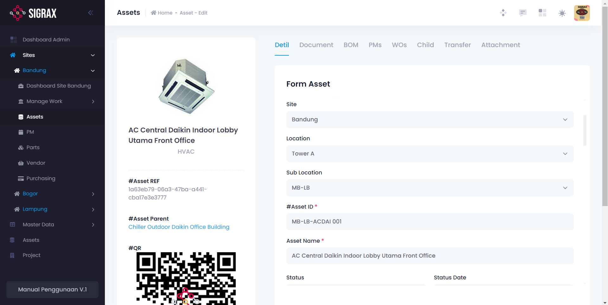

11 modul terintegrasi untuk kebutuhan pabrik
Arsitektur modular yang dirancang untuk mendukung operasional teknisi lantai pabrik hingga pengambilan keputusan level direksi.

Executive Dashboard
Ringkasan komprehensif atas biaya perawatan, tiket perbaikan aktif, serta performa uptime lini produksi pabrik.
- Monitoring metrik real-time & status breakdown
- Rekapitulasi pemakaian biaya suku cadang otomatis
.png)
Master Data Hub
Pusat data terintegrasi yang menyimpan seluruh informasi aset mesin, lokasi penempatan, data teknisi, vendor, dan satuan unit.
- Standardisasi kodefikasi aset otomatis
- Sentralisasi database seluruh lini produksi

Manajemen Aset & Mesin
Kelola seluruh profil mesin manufaktur — riwayat perbaikan, masa garansi, spesifikasi teknis komponen, dan depresiasi nilai buku.
- Rekam jejak servis lengkap per nomor seri
- Riwayat pergantian suku cadang per mesin

Hierarki Lokasi Pabrik
Pemetaan struktur lokasi penempatan aset (Plant → Building → Line → Station) untuk mempercepat teknisi menemukan titik mesin.
- Struktur pohon lokasi bertingkat
- Filter cepat aset berdasarkan area pabrik

Work Request Portal
Media pelaporan cepat bagi operator lini produksi ketika menemukan anomali mesin, menghilangkan birokrasi formulir kertas yang lambat.
- Pengajuan tiket kerusakan instan dari lapangan
- Tingkat prioritas: Low, Medium, High, Emergency

Work Order & Eksekusi
Pusat penugasan tugas teknisi: melacak status Open, In Progress, Pending Parts, hingga verifikasi selesai oleh supervisor.
- Checklist perbaikan digital dengan foto bukti
- Pencatatan jam kerja & pemakaian suku cadang

Material & Parts Request
Permintaan spare part terhubung langsung dengan nomor Work Order untuk menjamin akurasi pemakaian stok dan alokasi biaya mesin.
- Validasi ketersediaan stok di gudang maintenance
- Alur approval pengambilan part oleh supervisor

Inventaris Gudang & Tools
Kelola stok suku cadang dan alat kerja. Dilengkapi peringatan otomatis stok menipis (reorder point) untuk mencegah downtime.
- Peringatan batas stok minimum (Min-Max)
- Riwayat mutasi masuk, keluar, dan penyesuaian

Preventive Maintenance
Otomatisasi jadwal inspeksi berkala. Mencegah kerusakan sebelum terjadi, memperpanjang umur mesin, dan menjaga output pabrik.
- Penjadwalan kalender atau berbasis Running Hours
- Auto-generate Work Order menjelang jatuh tempo

Manajemen Tim & Teknisi
Kelola data teknisi, sertifikasi keahlian, pembagian shift, dan beban kerja harian agar distribusi tugas merata dan terukur.
- Pemetaan keahlian sesuai spesifikasi mesin
- Evaluasi produktivitas & waktu respon kerja

Laporan & Analitik Audit
Ekspor laporan audit ISO, rekap biaya bulanan, analisis penyebab breakdown dominan, dan laporan evaluasi KPI format PDF/Excel.
- Ekspor data fleksibel siap cetak ke Excel & PDF
- Analisis biaya pemeliharaan per departemen
Butuh modul khusus yang disesuaikan dengan SOP Anda?
Tim engineer kami siap mengkonfigurasi sistem dan alur kerja sesuai dengan formulir serta standarisasi pabrik Anda.